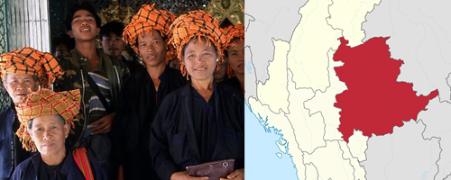

Shan

The Shan people or Tai Shan or Tai Yai are a Tai ethnic group of Southeast Asia.
The Shan live primarily in the Shan State of Burma (Myanmar), but also inhabit parts of Mandalay Region, Kachin State, and Kayin State, and in adjacent regions of China (Dai people), Laos, Assam (Ahom people) and Thailand. Though no reliable census has been taken in Burma since 1935, the Shan are estimated to number 4–6 million, with CIA Factbook giving an estimate of five million spread throughout Myanmar.
'Shan' is a generic term for the people of all Tai ethnicity inside Myanmar (Burma). The capital of Shan State is Taunggyi, the fifth-largest city in Myanmar with about 390,000 people. Other major cities include Thibaw (Hsipaw), Lashio, Kengtung and Tachileik.
Shan State is a state of Myanmar.
Shan State borders China (Yunnan) to the north, Laos (Louang Namtha and Bokeo Provinces) to the east, and Thailand (Chiang Rai, Chiang Mai and Mae Hong Son Provinces) to the south, and five administrative divisions of Burma in the west.
Largest of the 14 administrative divisions by land area, Shan State covers 155,800 km2, almost a quarter of the total area of Burma.
The state gets its name from Burmese name for the Tai people: "Shan people".
The Shan constitute the majority among several ethnic groups that inhabit the area.
Shan is largely rural, with only three cities of significant size: Lashio, Kengtung, and the capital, Taunggyi.
Taunggyi is 150.7 km northeast of the nation's capital Naypyitaw.
Read more
Wikipedia